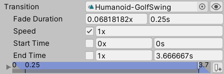

Note that Animancer Lite only allows you to try out these features in the Unity Editor, but they are not available in runtime builds unless you purchase Animancer Pro. See the Feature Comparison for more information.
Speed
Setting the speed you want an animation to play at is fairly simple in both systems.
| Mecanim | Animancer |
|---|
- Select the animation's state in the Animator Controller.
- Set its
Speed field.
Note that this will not allow the speed to be modified at runtime (see below to set it up for that).
|
You could either set it in code when you play the animation:
[SerializeField]
AnimancerComponent _Animancer;
[SerializeField]
AnimationClip _Clip;
void PlayAnimation()
{
var state = _Animancer.Play(_Clip);
state.Speed = 2;
}
Or use a Transition so it can be set in the Inspector alongside the AnimationClip:
[SerializeField]
AnimancerComponent _Animancer;
[SerializeField]
ClipState.Transition _Animation;
void PlayAnimation()
{
_Animancer.Play(_Animation);
}

|
Sometimes you also need to modify the speed dynamically at runtime, such as to modify a character's attack speed in response to a buff. As usual, Animancer simply allows you to get straight to the point while Mecanim requires a bunch of additional setup steps:
| Mecanim | Animancer |
|---|
- Create a new
Float Parameter in the Animator Controller. You probably want to set its default value to 1.
- Select the animation's state.
- Tick the
Parameter toggle next to the Multiplier field underneath the base Speed.
- Select the parameter you just created from the dropdown menu.
- Now you can set the parameter by calling
Animator.SetFloat("Parameter Name", value) which will control the speed of the animation.
[SerializeField] Animator _Animator;
void LudicrousSpeed()
{
_Animator.SetFloat("ParameterName", 9000);
}
It is also possible to set the speed property on the Animator component itself, however this is generally not recommended because it affects all animations at once. Transitioning from a fast animation into a slow one would either play them both fast or both slow or gradually blend the speed, but it could not simply allow one to play fast while the other plays slowly.
|
- Literally the same as the first example above. Just get the
AnimancerState returned by the Play method and modify its Speed.
You can also keep a reference to the state if you need to be able to change the speed while it is playing.
[SerializeField]
AnimancerComponent _Animancer;
[SerializeField]
AnimationClip _Clip;
AnimancerState _State;
void PlayAnimation()
{
_State = _Animancer.Play(_Clip);
}
void LudicrousSpeed()
{
_State.Speed = 9000;
// Several alternatives:
// Get the state when needed.
// _Animancer.States[_Clip].Speed = ...
// Or even just keep telling it to Play.
// _Animancer.Play(_Clip).Speed = ...
}
|
Time
Both systems also allow you to control the animation time directly:
| Mecanim | Animancer |
|---|
|
The Animator.Play and CrossFade methods have an optional normalizedTime parameter to specify where you want the animation to start.
[SerializeField]
Animator _Animator;
void SkipToHalfTime()
{
// State Name, Layer, Normalized Time.
_Animator.Play("Action", 0, 0.5f);
}
You can call Play again while the animation is already playing to jump to a different time.
You can also use a parameter to control the normalized time much like the speed:
- Create a new
Float Parameter in the Animator Controller.
- Select the animation's state.
- Tick the
Parameter toggle next to the Normalized Time field.
- Select the parameter you just created from the dropdown menu.
- Now you can set the parameter by calling
Animator.SetFloat("ParameterName", value) which will control the normalized time of the animation.
[SerializeField]
Animator _Animator;
void SkipToHalfTime()
{
_Animator.SetFloat("ParameterName", 0.5f);
}
Warning: doing this will cause the parameter to control the state constantly. It will no longer play normally unless you manually update the parameter every frame.
Also note that both of these options set the normalized time (0 to 1 range). Mecanim does not allow you to set the raw time of an animation (in seconds).
|
Again, basically the same as the first example above. Just get the AnimancerState returned by the Play method and modify its Time or NormalizedTime.
[SerializeField]
AnimancerComponent _Animancer;
[SerializeField]
AnimationClip _Clip;
void PlayAnimation()
{
var state = _Animancer.Play(_Clip);
// Skip 1 second in.
state.Time = 1;
// Skip halfway through.
state.NormalizedTime = 0.5f;
}
|